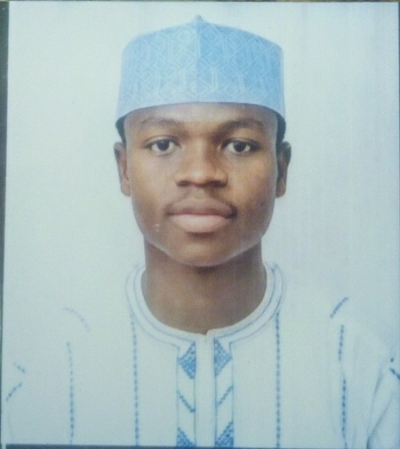

|  |
Mahmud AbdulkarimGraduate Computer Science Department No. 38 Bashar Road A.B.U Kongo Campus, Zaria, Kaduna State, Nigeria |
A Computer Scientist looking for an opportunity to utilize my strengths and technical skills to contribute towards achieving the goals of your organization.
I am a motivated and versatile individual with the ability to work effectively and efficiently with or without supervision. I am ever ready to gain new knowledge and learn new skills.
|
|
2020 |
|
2016 |
|
2015 |
|
2009 |
| BSc (Hons) Computer Science, Ahmadu Bello University, Zaria Achieved second class honors (Upper division) |
2020 |
| Diploma in Data Processing, TEKU Computer Institute,
New Jos Road, Zaria Achieved Upper Credit. |
2016 |
| Demonstration Secondary School A.B.U Zaria, Kaduna State NECO Certificate (Science Subjects). 7 C’s including Maths and English |
2015 |
| A.B.U Staff School, Kongo Zaria Primary School Leaving Certificate |
2009 |
|
2021 |
|
2021 |
|
2020 |
|
2020 |
Dr. Abdulkarim Sulaiman
Center for Islamic Legal Studies (C.I.L.S)
Ahmadu Bello University, Zaria
08035536136
Prof. Bala Babaji
Islamic Law Department
Faculty of Law
Ahmadu Bello University, Zaria
08035888441
Prof. Ibrahim Abdulkarim
Private Law Department
Faculty of Law
Ahmadu Bello University, Zaria
08033525450